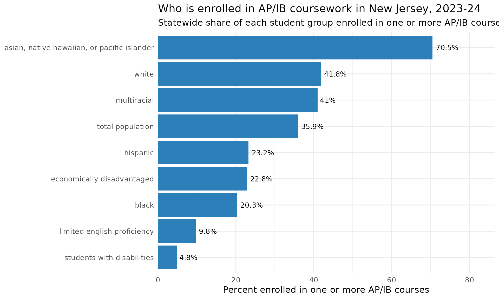
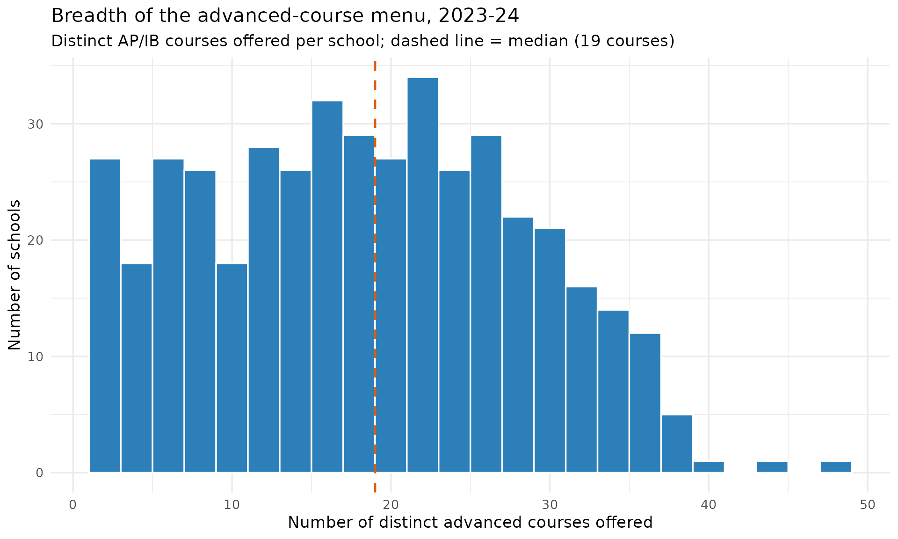

Advanced-Coursework Access & Equity
Source:vignettes/nj-advanced-courses.Rmd
nj-advanced-courses.RmdThe usual AP/IB question is “how many students took an exam.” The
harder, more newsworthy question is about access: does
a school even offer advanced courses, and once offered, who actually
gets in. fetch_advanced_course_access() answers both. A
single front door over three NJ School Performance Report sheet
families:
-
type = "courses_offered"– one row per school per advanced course (enrolled / tested), 2017-2025. -
type = "participation_by_group"– AP/IB and dual-enrollment participation rates broken out by student group, 2021-2025. -
type = "sle"– Structured Learning Experience participation, 2017-2025.
Every rate and count comes straight from the published SPR workbooks;
suppression and no-data text is kept as NA, never a guessed
number.
The AP/IB access gap by student group
type = "participation_by_group" reports, for each
student group, the percent of students enrolled in one or more AP/IB
courses. The statewide rate per group is carried in the
apib_pct_state column. Lining the groups up shows an access
gap that is anything but subtle: in 2023-24 Asian students participated
at 70% while students with disabilities sat at
under 5%, with English learners, Black, Hispanic, and
economically disadvantaged students all well below the statewide
average.
groups <- c(
"asian, native hawaiian, or pacific islander", "white", "multiracial",
"total population", "hispanic", "black", "economically disadvantaged",
"limited english proficiency", "students with disabilities"
)
apib_state <- fetch_advanced_course_access(
2024, type = "participation_by_group", level = "district"
) %>%
filter(is_state, subgroup %in% groups) %>%
group_by(subgroup) %>%
summarise(apib_pct = first(apib_pct_state), .groups = "drop") %>%
filter(!is.na(apib_pct)) %>%
arrange(apib_pct)
# Print-before-plot: confirm the data feeding the chart.
stopifnot(nrow(apib_state) > 0)
apib_state
#> # A tibble: 9 × 2
#> subgroup apib_pct
#> <chr> <dbl>
#> 1 students with disabilities 4.8
#> 2 limited english proficiency 9.8
#> 3 black 20.3
#> 4 economically disadvantaged 22.8
#> 5 hispanic 23.2
#> 6 total population 35.9
#> 7 multiracial 41
#> 8 white 41.8
#> 9 asian, native hawaiian, or pacific islander 70.5
ggplot(apib_state, aes(x = reorder(subgroup, apib_pct), y = apib_pct)) +
geom_col(fill = "#2c7fb8") +
geom_text(aes(label = paste0(apib_pct, "%")), hjust = -0.15, size = 3.6) +
coord_flip() +
scale_y_continuous(limits = c(0, 80), expand = expansion(mult = c(0, 0.08))) +
labs(
title = "Who is enrolled in AP/IB coursework in New Jersey, 2023-24",
subtitle = "Statewide share of each student group enrolled in one or more AP/IB courses",
x = NULL,
y = "Percent enrolled in one or more AP/IB courses"
) +
theme_minimal(base_size = 13)
How many advanced courses does a school offer at all?
Access starts with supply. type = "courses_offered"
lists every advanced course a school runs, so counting distinct courses
per school measures the breadth of the advanced-course
menu. In 2023-24 the typical NJ high school offering any advanced course
listed about 19 of them, but the range is enormous - from a single
course to nearly 50.
breadth <- fetch_advanced_course_access(2024, type = "courses_offered") %>%
filter(is_school) %>%
group_by(district_id, school_id, school_name) %>%
summarise(n_courses = n_distinct(course_name), .groups = "drop")
# Print-before-plot.
stopifnot(nrow(breadth) > 0)
summary(breadth$n_courses)
#> Min. 1st Qu. Median Mean 3rd Qu. Max.
#> 2.00 11.00 19.00 18.81 26.00 49.00
ggplot(breadth, aes(x = n_courses)) +
geom_histogram(binwidth = 2, fill = "#2c7fb8", colour = "white") +
geom_vline(xintercept = median(breadth$n_courses),
linetype = "dashed", colour = "#d95f0e", linewidth = 0.9) +
labs(
title = "Breadth of the advanced-course menu, 2023-24",
subtitle = paste0("Distinct AP/IB courses offered per school; dashed line = median (",
median(breadth$n_courses), " courses)"),
x = "Number of distinct advanced courses offered",
y = "Number of schools"
) +
theme_minimal(base_size = 13)
The schools with the widest menus:
breadth %>%
arrange(desc(n_courses)) %>%
slice_head(n = 10) %>%
select(school_name, n_courses)
#> # A tibble: 10 × 2
#> school_name n_courses
#> <chr> <int>
#> 1 West Morris Mendham High School 49
#> 2 West Morris Central High School 45
#> 3 Howell High School 41
#> 4 Morris Knolls High School 39
#> 5 Freehold Township High School 38
#> 6 Livingston High School 38
#> 7 Randolph High School 38
#> 8 Red Bank Regional High School 38
#> 9 Bergen County Academies 37
#> 10 Bridgewater-Raritan High School 37Notes
-
fetch_advanced_course_access()acceptslevel = "school"(default) orlevel = "district"; the statewideis_staterow lives in the District workbook. - Coverage:
courses_offeredandslespan 2017-2025;participation_by_groupspans 2021-2025 (the sheet is absent 2017-2020 and those years error). The 2025 participation sheet is a multi-year trend table filtered to the requested year. - Suppression / no-data strings (e.g. “There is no data available for
this school year.”) are coerced to
NA, never a fabricated number.
sessionInfo()
#> R version 4.6.1 (2026-06-24)
#> Platform: x86_64-pc-linux-gnu
#> Running under: Ubuntu 24.04.4 LTS
#>
#> Matrix products: default
#> BLAS: /usr/lib/x86_64-linux-gnu/openblas-pthread/libblas.so.3
#> LAPACK: /usr/lib/x86_64-linux-gnu/openblas-pthread/libopenblasp-r0.3.26.so; LAPACK version 3.12.0
#>
#> locale:
#> [1] LC_CTYPE=C.UTF-8 LC_NUMERIC=C LC_TIME=C.UTF-8
#> [4] LC_COLLATE=C.UTF-8 LC_MONETARY=C.UTF-8 LC_MESSAGES=C.UTF-8
#> [7] LC_PAPER=C.UTF-8 LC_NAME=C LC_ADDRESS=C
#> [10] LC_TELEPHONE=C LC_MEASUREMENT=C.UTF-8 LC_IDENTIFICATION=C
#>
#> time zone: UTC
#> tzcode source: system (glibc)
#>
#> attached base packages:
#> [1] stats graphics grDevices utils datasets methods base
#>
#> other attached packages:
#> [1] ggplot2_4.0.3 dplyr_1.2.1 njschooldata_0.9.24
#>
#> loaded via a namespace (and not attached):
#> [1] utf8_1.2.6 sass_0.4.10 generics_0.1.4 tidyr_1.3.2
#> [5] stringi_1.8.7 hms_1.1.4 digest_0.6.39 magrittr_2.0.5
#> [9] evaluate_1.0.5 grid_4.6.1 timechange_0.4.0 RColorBrewer_1.1-3
#> [13] fastmap_1.2.0 cellranger_1.1.0 jsonlite_2.0.0 purrr_1.2.2
#> [17] scales_1.4.0 textshaping_1.0.5 jquerylib_0.1.4 cli_3.6.6
#> [21] rlang_1.2.0 withr_3.0.3 cachem_1.1.0 yaml_2.3.12
#> [25] otel_0.2.0 downloader_0.4.1 tools_4.6.1 tzdb_0.5.0
#> [29] vctrs_0.7.3 R6_2.6.1 lifecycle_1.0.5 lubridate_1.9.5
#> [33] snakecase_0.11.1 stringr_1.6.0 fs_2.1.0 ragg_1.5.2
#> [37] janitor_2.2.1 pkgconfig_2.0.3 desc_1.4.3 pkgdown_2.2.0
#> [41] pillar_1.11.1 bslib_0.11.0 gtable_0.3.6 glue_1.8.1
#> [45] systemfonts_1.3.2 xfun_0.59 tibble_3.3.1 tidyselect_1.2.1
#> [49] knitr_1.51 farver_2.1.2 htmltools_0.5.9 labeling_0.4.3
#> [53] rmarkdown_2.31 readr_2.2.0 compiler_4.6.1 S7_0.2.2
#> [57] readxl_1.5.0